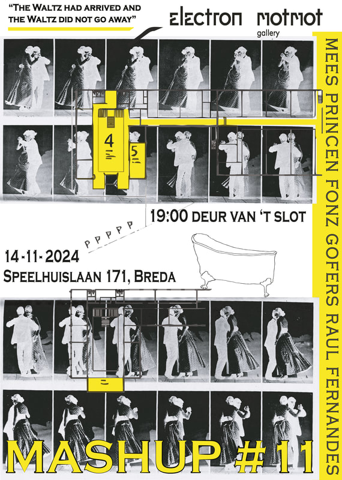

" Wanneer wij slapen pluizen we graag onze gedachtes uit, wanneer we wakker zijn bestaat deze drang niet. Maar soms moet je, zoals u zult zien in deze droomrijke avond. Er zijn vissen in de zee die zingen, de danser draagt zijn eigen spotlight, een film kijkt naar jou, een bad kan lekken maar uw perceptie ook. In 1829 viel de Walts in de smaak, voor mensen met veel geld. Als wij later groot zijn willen we ook rollen als geld. Voor een mooie parel jurk of gedrapeerde witte tanden. "
Dit was een installatie en performance waar het contrast tussen arm en rijk op een surrealistische manier werd verteld. De ruimte bevindt zich in een droom tussen arm en rijk. De video's die gepresenteerd werden laten armoede zien terwijl er een Waltz wordt uitgevoerd. Het bad, waar blauwe vloeistof in druppelt, symboliseerd een staat van dromen.
14 november 2024 - Elektron. In samenwerking met; Mees Princen & Fonz Gofers